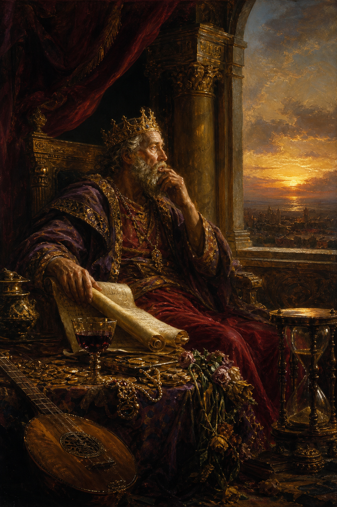

Old Testament · Book 21 of 39
Ecclesiastes
A king who has tried everything — wealth, pleasure, achievement, wisdom itself — looks back and calls it all vapour, then points past it to the only thing that lasts: fearing God and keeping his commandments.
Ecclesiastes is the honest journal of a man who had the resources to pursue every pleasure and project life offers, and who concluded that none of it, pursued for its own sake, could satisfy. The Preacher tests wisdom, wealth, pleasure, labour, and legacy, and finds each one fleeting, like vapour that cannot be grasped, before arriving at a sober and freeing conclusion about where lasting meaning is actually found.
Vanity of vanities, saith the Preacher, vanity of vanities; all is vanity.
What happens in Ecclesiastes
The Preacher, identified as a son of David and king in Jerusalem, opens by declaring that everything under the sun is vapour, fleeting and ungraspable, and sets out to test that claim through his own experience. He pursues wisdom and knowledge, only to find that increased understanding brings increased sorrow. He tries pleasure, grand building projects, vineyards, wealth, and many servants, and finds it all ultimately unsatisfying once death is considered, since the wise man and the fool share the same end. He observes the oppression and injustice under the sun, the loneliness of toiling without someone to share it with, and the emptiness of chasing reputation and riches that someone else will eventually inherit. Threaded through the book is the famous meditation that there is a time for every purpose under heaven, a season for everything from birth to death, planting to harvest, war to peace. Rather than ending in despair, the Preacher counsels receiving each day, work, food, and companionship, as a gift from God's hand, since trying to fully grasp God's ways is beyond human reach. The book closes with an exhortation to remember the Creator in the days of youth before the body grows old, and a final conclusion: fear God, and keep his commandments, for this is the whole duty of man, since God will bring every work into judgment.
Why it matters
Ecclesiastes gives permission to say out loud what many people feel but rarely admit: that achievement, pleasure, and knowledge, chased as ends in themselves, leave a person empty. It is not a book of despair but of recalibration, stripping away false sources of meaning so that the true one can be seen clearly. For anyone exhausted by striving after things that cannot last, Ecclesiastes points to a steadier foundation, receiving ordinary life as a gift from a living God and resting in reverent trust rather than frantic pursuit, because he alone gives days their weight and meaning.
Jump to a chapter
Ecclesiastes has 12 chapters — select one to begin reading there.